← 返回阅读库 · 原论文目录
论文讲解阅读文档 · 多模态语言模型 · v038
CRG Improving Grounding in VLM wo training[2403.02325]
视频时长 00:05:22；讲解文字 2,658 字符；提取讲解画面 20 张。按视频原顺序阅读，每段文字保留时间戳。
文字来自整段视频的自动语音转写，按自然停顿分段，并与 PPT / 论文页面 / 演示画面对齐。未将讲解压缩为摘要；术语、数字和口述公式请结合画面及原论文核对。 阅读稿已校正规范部分明确术语误识别；原始逐字稿和每处修改记录另行保留。
讲解画面为源视频截图（640×360），不是可编辑 PPT 文件。全片按每秒 2 帧扫描内容变化，逐步展开页保留；连续动画保留代表画面。清晰度受源视频限制。
下载完整资料包 · 含离线 HTML、PDF、Word、全部 PPT 画面和字幕。
原论文与材料
Contrastive Region Guidance: Improving Grounding in Vision-Language Models without Training · 下载完整 PDF（23 页）
按时间阅读
00:00:00–00:00:28 · 画面 001
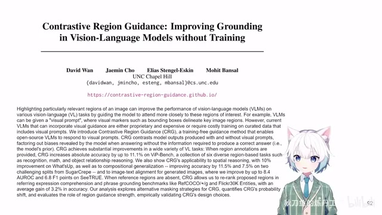
00:00:00–00:00:28 · 画面 001大家好,今天我们来快速水一篇论文 Contrastive Region GuidanceImproving Grounding in Vision Language Models Without Training。那这一篇呢,它的方法非常直接，就是用这个 Diffusion Model 里面的这个 Classifier Free Guidance，用它呢,来放到我们的这个 Vision Language Model 里面，帮助我们的这个 VLM 去更好地完成 grounding 的任务。那比如说，就是识别一下各个物体之间的相互关系啊，等等，确定一个物体在哪儿这样的任务。这个呢,是本文的核心的思想。
00:00:28–00:01:57 · 画面 002
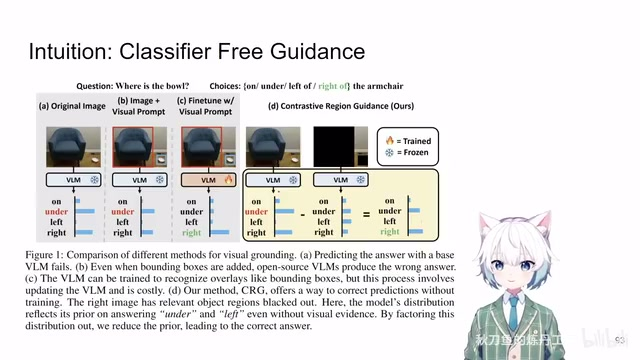
00:00:28–00:01:57 · 画面 002那我们来看到这个例子对吧？比如说这里他想知道这个碗在什么位置，那后续的答案包括在 armchair 这个不同的位置。你如果是原本图像直接扔进去，可能这个 Vision Language Model 它对这个空间的信息不是那么敏感，哪怕你给了这个 Visual Prompt 标上框对吧，它也不一定能够做得很好。那这个时候呢，必须是加上这个 fine-tuning，可能它才能够达到一个比较好的效果。
那么在本文这个例子中，就是用了 classifier free guidance，用了这个思想。这个东西就是我去做两次推理，第一次推理是所有的条件都给全，所有的图像的信息都给全，我推理得出一个 distribution。那么第二次推理我故意把这些关键的信息隐去，把这些信息给它去掉，去掉之后用这样的图再去做一次推理。这一次推理其实相当于我们可以。
用一个不严格的话来讲，就是相当于把这个 Vision Language Model 里面对这张图的一个基底的一个噪声、一个印象给它解出来。这样子呢，你只需要衡量这两次推理之间相差的那一部分。那理论上来说，这个相差的部分就包含了我们这个被 masked out 的区域里面的信息，而且就只包含这个信息，不会受其他的背景啊什么这些东西的干扰。这个呢，是本文最核心的思想，也是这个 classifier-free guidance 它的一个核心的思想。
那其实到这里就结束了，下面我们继续来看作者的这个实现对吧？这里也是一些定义 auto regressive 的 Vision Language Model，就是根据图像和文本，包括你之前生成的答案，因为它是一个 auto regressive 的嘛，然后来生成下一个 token。这是它的一个 Vision Language Model 一个标准的定义。那你加上这个 classifier free guidance，你就相当于做两次 inference。第一次呢，是你正常的原始的图像，正常的做 inference。
00:01:57–00:02:10 · 画面 003
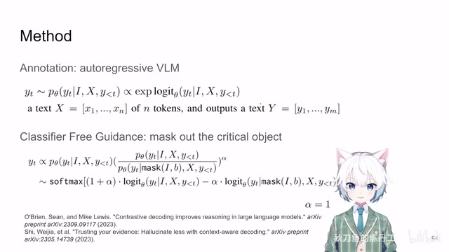
00:01:57–00:02:10 · 画面 00300:02:10–00:02:12 · 画面 004
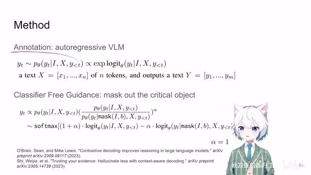
00:02:10–00:02:12 · 画面 00400:02:12–00:02:18 · 画面 005
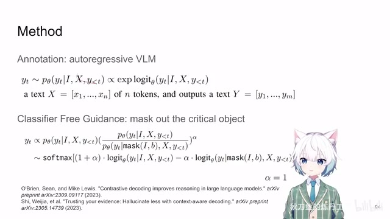
00:02:12–00:02:18 · 画面 00500:02:18–00:02:19 · 画面 006
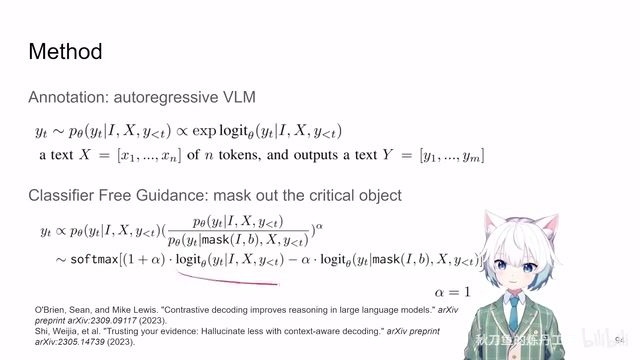
00:02:18–00:02:19 · 画面 00600:02:19–00:02:45 · 画面 007
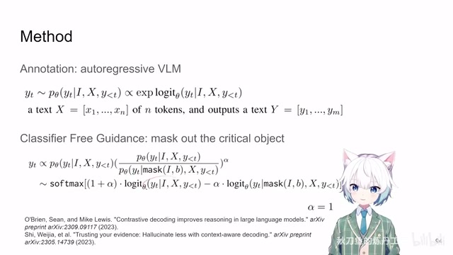
00:02:19–00:02:45 · 画面 007你有一个 logits 然后呢，第二次呢，你把这个 mask 加到你的图像上，把这些关键的信息给他去掉，给他变黑啊这样的 mask out 这个图片之后呢，再送到这个 vision-language model 里面再去预测下一个 token logits。那两个 logits。根据这个权重来给它组合，你看到这是 1 加α减去α倍的这个东西。那这里呢，它根据之前的文章的经验，那这些都是把这个 classifier free guidance 用到这个 language model 里面的这些方法。那么根据这些文章的经验，α设成 1 就可以了。那这个式子呢，就是你两个 logits 一减对吧，然后过 softmax，最后出来的结果呢就是我们真正想要的结果。那当然因为是 softmax 减嘛，所以呢，你可以把它写成这样的形式。
00:02:45–00:02:46 · 画面 008
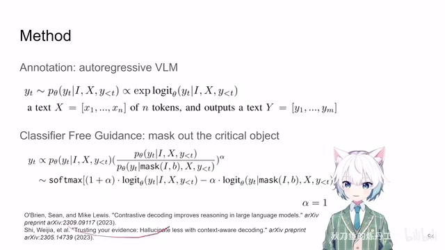
00:02:45–00:02:46 · 画面 00800:02:46–00:02:48 · 画面 009
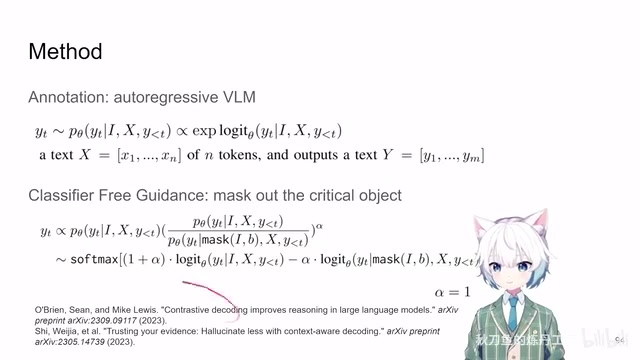
00:02:46–00:02:48 · 画面 00900:02:48–00:03:08 · 画面 010
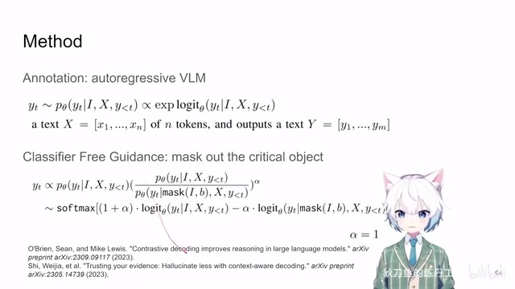
00:02:48–00:03:08 · 画面 010对吧？那么这个呢，就是本文的最直接的方法。那么下面呢，一个很直接的问题就是我们具体应该怎么样产生这个 mask 啊，怎么样去把这个条件移除是效果是最好的。那这里呢，做着标准的解法就是假如说我这个数据集里面有这个 prompt region 啊，就是有一个框，想要问这个什么里面的信息，我们就直接用啊。如果说没有呢，我们去看这个问题里面有哪些名词，根据这些名词呢。
00:03:08–00:03:09 · 画面 011
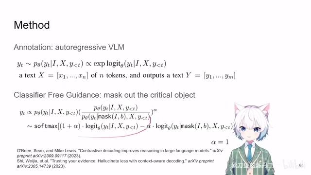
00:03:08–00:03:09 · 画面 01100:03:09–00:03:11 · 画面 012
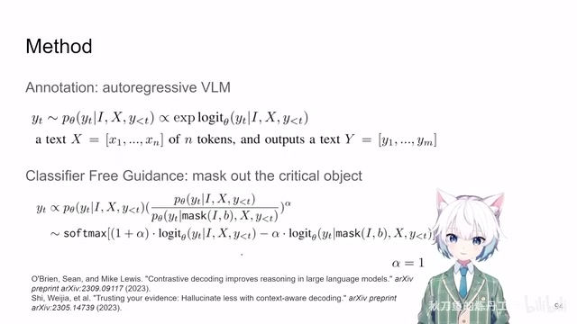
00:03:09–00:03:11 · 画面 01200:03:11–00:03:39 · 画面 013
00:03:11–00:03:39 · 画面 013有这么多好的 open vocabulary 这样的这个 object detector 去把我们的各种物体的 bounding box 给它解出来，简单的 filter 一下就好了。那么当然了，作者也有 ablation 去讲了，我是拿了 bounding box 去 mask 还是用我们的这个语义的一个精确的这样一个 mask 去 mask out，而且还对比的是直接 blackout 直接 mask out 还是加 overlay 这样的效果。
00:03:39–00:03:40 · 画面 014
00:03:39–00:03:40 · 画面 01400:03:40–00:04:08 · 画面 015
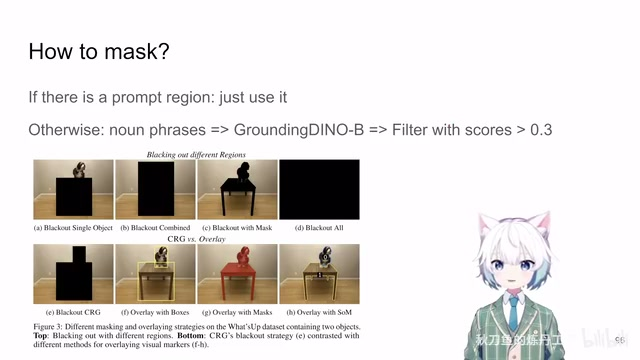
00:03:40–00:04:08 · 画面 015那么这些详细的实验呢，感兴趣的朋友呢，非常推荐你到原文中查看。当然作者在那个数据集上测下来效果最好的就是根据 bounding box 把我们这个 object 给它 blackout 掉。那这样子呢，就是本文默认的配置。那么下面一个快速的结果啊，这个 ViP-Bench 上面啊，不同的种类的任务啊，他们的性能。看到作者呢，对比的是自己的方法还有这个 som 啊，什么迷之声啊，不是迷之声啊，是这个 Set-of-Mark。本质上呢，他就是用了 sam
00:04:08–00:04:20 · 画面 016
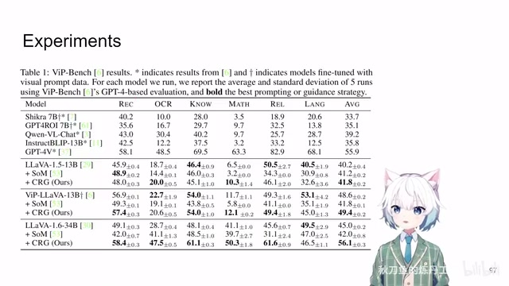
00:04:08–00:04:20 · 画面 01600:04:20–00:04:32 · 画面 017
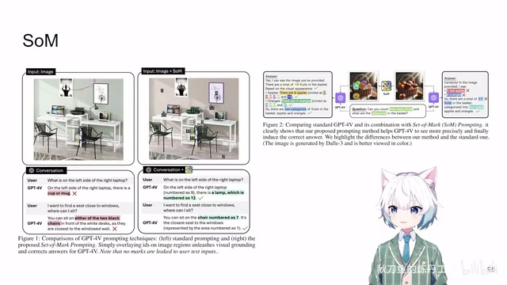
00:04:20–00:04:32 · 画面 017把这些东西分割出来，然后在上面叠上数字的标签，扔给 GPT 这样的方法，这样的 Vision Language Model 去做，效果还是不错的。当然呢，你要严格说这个 CRG 跟这个 SOM 它也不是能够直接对比的，因为你 CRG 是需要取到模型的这个 logits，它是需要拿到你模型原始的这个 decode 输出的，而这个 SOM 呢就不需要。所以呢，SOM 能用 GPT 这样的这个闭源模型，而 CRG 呢只能用这些开源模型
00:04:32–00:04:51 · 画面 018
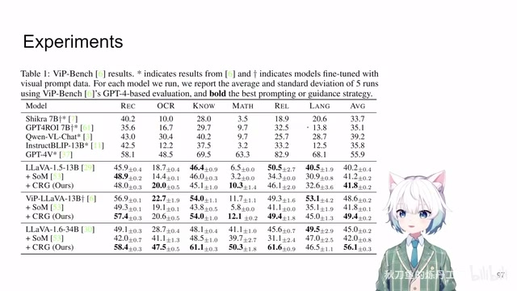
00:04:32–00:04:51 · 画面 01800:04:51–00:05:22 · 画面 019
00:04:51–00:05:22 · 画面 019好的，那么总来说呢，这一篇就是用了一个 classifier free guidance，把它原来用在 diffusion model 上的，用在 language model 上面的，现在给它弄到 vision language model 上。重点呢，就是在于编辑这个 image blackout 这个 image 来产生 condition 和 uncondition 这两种情况，然后做个差，是一个非常直接的方法。你也不需要去动 Vision Language Model 的参数。好的，那么以上就是我对这篇论文的一个非常快速的整理。那么感谢您的收看，请多多指点
00:05:22–00:05:22 · 画面 020
00:05:22–00:05:22 · 画面 020转写与来源说明 · 0 个自动复核提示
保留 13 个原始语音片段，0 个片段触发自动复核提示。提示仅用于定位可能的术语、重复或识别问题，不等于已确认错误。
讲解画面为源视频截图（640×360），不是可编辑 PPT 文件。全片按每秒 2 帧扫描内容变化，逐步展开页保留；连续动画保留代表画面。清晰度受源视频限制。
原视频：paper/合集_2026-10-16_多模态语言模型/[论文速览]CRG Improving Grounding in VLM wo training[2403.02325].mp4
SHA-256：c184e20eadb3fa39ec51851bdb33fef55c06d4bc5a6c6aacbb4b7d2f848f842e
全文按视频语音与画面制作。原论文可从上方链接下载；完整资料包保留全文、原始逐字稿、字幕和校对记录。